This page should not hide the process. It should reveal it. That is why the editorial narrative is accompanied by raw material: notes, questions, dialogue and original reasoning.
The first thought
The idea started with a practical question: how can two apps be featured without turning everything into advertising? The answer was to build stories where the characters naturally use the apps to solve real situations.
That is where ImmoBit and AutoBit stop being merely products and become storytelling tools.
Original notes · The first formulation of the idea
I have decided
that the best way to promote my apps
is to create a comic in which the main characters
use them to solve situations.
The style I have chosen, considering the target audience,
20 to 60 years old, men and women,
should be European ligne claire.
I am not a comic book writer or dialogue writer.
I would just like the theme to evolve from the release
of the first installment, if we can call it that.
Perhaps we will reach 5, 10 or 20 episodes; I do not know.
The episodes do not need to follow a strict timeline;
perhaps that could be reserved for the final two or three.
The apps involved are:
https://play.google.com/store/apps/details?id=com.memmolalabs.immobit
https://play.google.com/store/apps/details?id=com.memmolalabs.autobit
Tell me what you think.
Choosing the visual style
The visual direction came from a deliberate choice: European ligne claire. A readable, mature, professional, non-photorealistic style suited to stories about homes, cars, technology and small details.
The world is illustrated. The app is precise.
This rule keeps the project away from photo comics and gives it a recognizable identity as a European tech graphic novel.
Narrative philosophy
No product placement
The point is not to showcase features. It is to show decisions, doubts, risks and details that change everything.
The apps as storytelling tools
ImmoBit and AutoBit should enter the story the way a notebook, an archive, a camera or a professional instrument would: without demanding attention, yet becoming essential.
Original notes · Avoid product placement
The key point: DO NOT do product placement.
Here is the difference between:
a project people ignore
and something that could genuinely grow.
The apps should not look like:
“Look at my app.”
They should look like:
“This character naturally uses this tool.”
Almost like:
Batman → Batcomputer
detective → archive
pilot → instruments
journalist → camera
Your apps should become:
storytelling tools.
Worldbuilding
Realistic contemporary Europe
The story world is not science fiction. It is a more observant version of our world: European cities, real apps, everyday problems, discreet technology and subtle tension.
The atmosphere
The stories should feel like short, grounded thrillers: silence, light rain, modern cafés, real estate offices, car dealerships, underground parking, tablets and documents.
Original notes · Phase 1: building the world
PHASE 1 — Build the “world”
Even before the story.
You need to define:
atmosphere
city
types of people
level of realism
emotional tone
I recommend this mood:
“Realistic contemporary Europe”
Somewhere between:
Milan
Brussels
Lyon
Turin
Amsterdam
Atmosphere:
elegant
urban
slightly melancholic
professional
technological
realistic
Characters
First the method, then the faces
Characters begin with a narrative purpose: one person notices things, another asks questions, another introduces conflict. Elena and Luca emerge from there.
Elena Moretti
Elena reads properties as though they were physical memories. Walls, smells, light, silence and hidden details all become signals.
ImmoBit is her method: checklists, notes, scores, comparisons, reminders and reports.
Luca Romano
Luca reads cars the way Elena reads houses. Wear, documents, engines, paintwork, interiors and sellers all tell a story.
AutoBit is his technical memory: assessments, comparisons, reports and reminders.
The initial character structure
At first there was no need for a huge cast. What mattered was a simple dynamic: someone who can read the details, and someone who represents the audience's doubts.
Original notes · Phase 2: creating two protagonists
PHASE 2 — Create 2 protagonists
NOT 10.
Two are enough.
Protagonist 1
The rational one.
Traits:
observant
speaks little
highly analytical
elegant but simple
naturally uses ImmoBit and AutoBit
Age:
35–45
Protagonist 2
The emotional one.
Traits:
impulsive
curious
human
asks questions
creates narrative conflict
Age:
28–38
Why do you need both?
Because the reader is the impulsive character.
Original notes · Natural dialogue
A perfect example of natural dialogue
WRONG
“With ImmoBit we can analyze the real estate market.”
(advertising)
RIGHT
“Wait… something isn't right.”
“What do you mean?”
“The price is too low for this neighborhood.”
Then the app appears.
That is storytelling.
Pilot episode
The first story had to be simple
There was no need to start with a sprawling saga. One strong, familiar situation was enough: a perfect apartment, perhaps a little too perfect.
The perfect apartment
The first narrative outline was structured like a micro-thriller: appearance, doubt, observation, verification, discovery and a final line.
Original notes · Pilot episode structure
The PERFECT structure to get started
Episode 1
“The perfect apartment”
A very simple plot:
a couple visits an incredible apartment
the price is strangely low
everything looks perfect
the protagonist notices inconsistent details
uses ImmoBit
discovers a problematic history
the sale falls through
an ambiguous final panel
The end.
Original notes · A modern production pipeline
A modern production pipeline
1. We write the scene.
I help you.
2. We create a simple storyboard.
Even stick figures are fine.
3. You generate the panels with AI.
Keeping:
the same style
the same characters
the same color palette
4. You act as the director.
Not as the illustrator.
That is the key change in mindset.
Your real skill will be:
visual direction.
Visual archive
The apps before the stories
These screenshots show why the concept works: the apps were already credible as professional tools, so they could become a natural part of the story world.
ImmoBit interface archive
Checklists, scoring, archives, comparisons and PDFs become part of the series' narrative language.
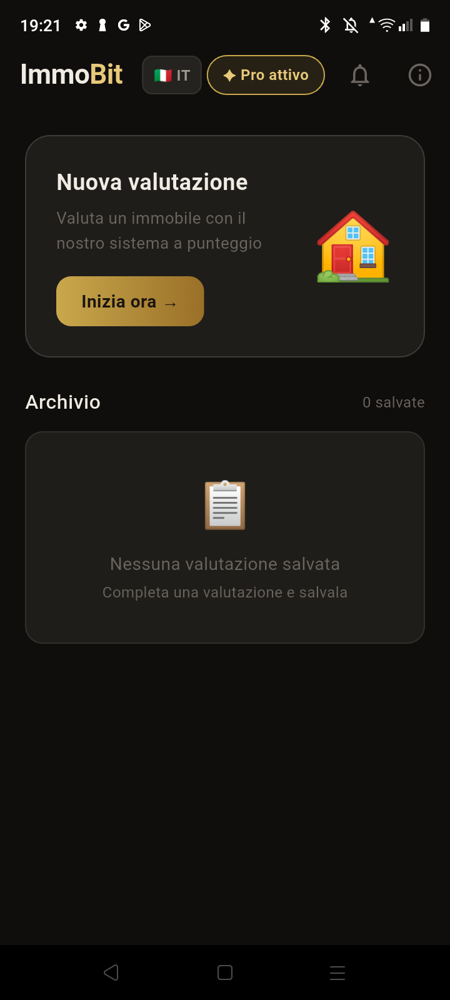
Home · starting point
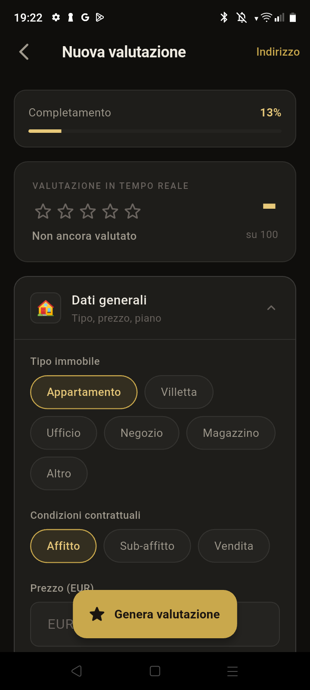
Checklist · observation
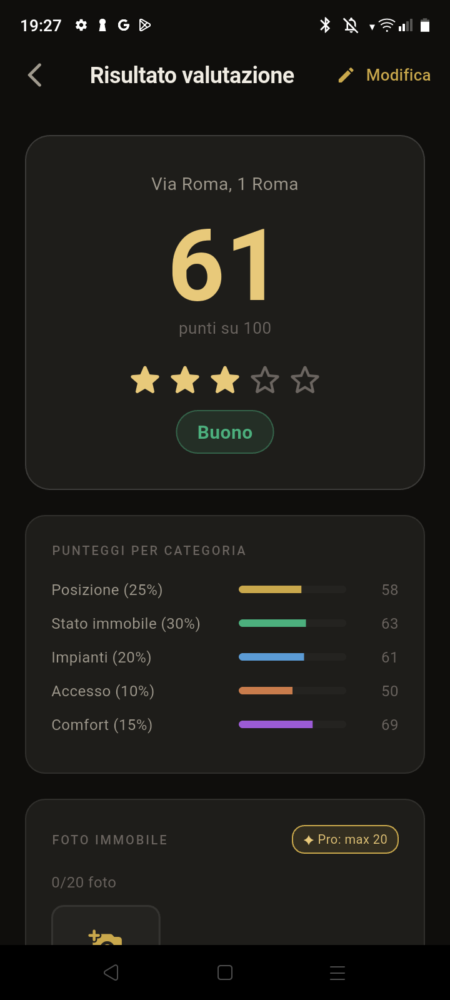
Scoring · decision
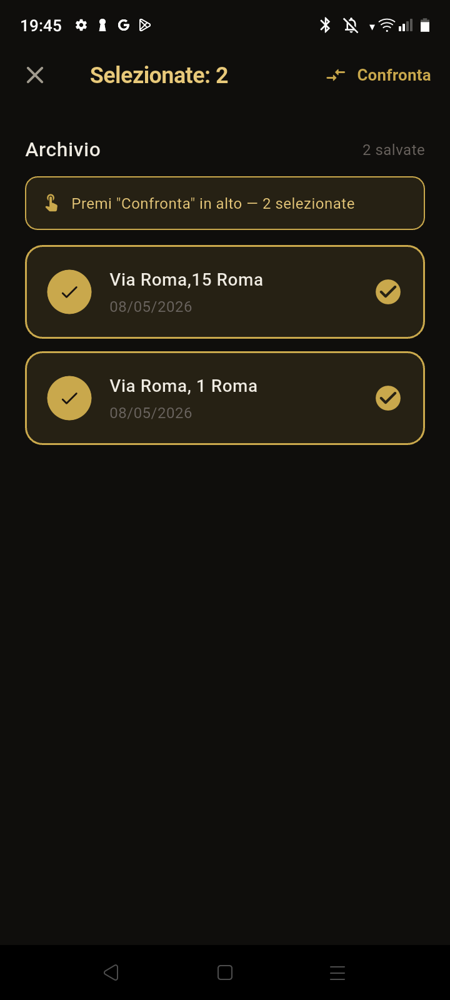
Comparison · choice
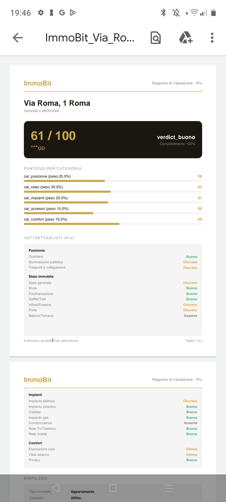
PDF · archive
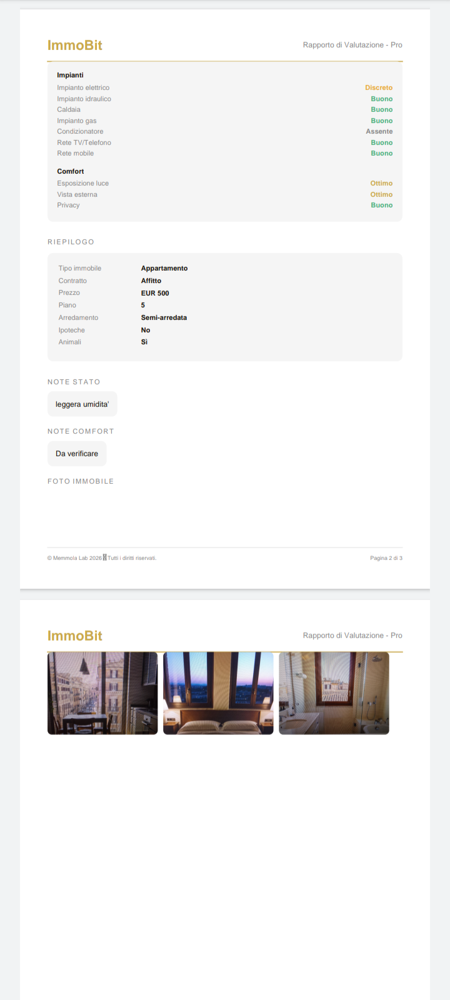
Report · memory
AutoBit interface archive
AutoBit adds technical assessments, comparisons across cars, reminders, documentation and reports.
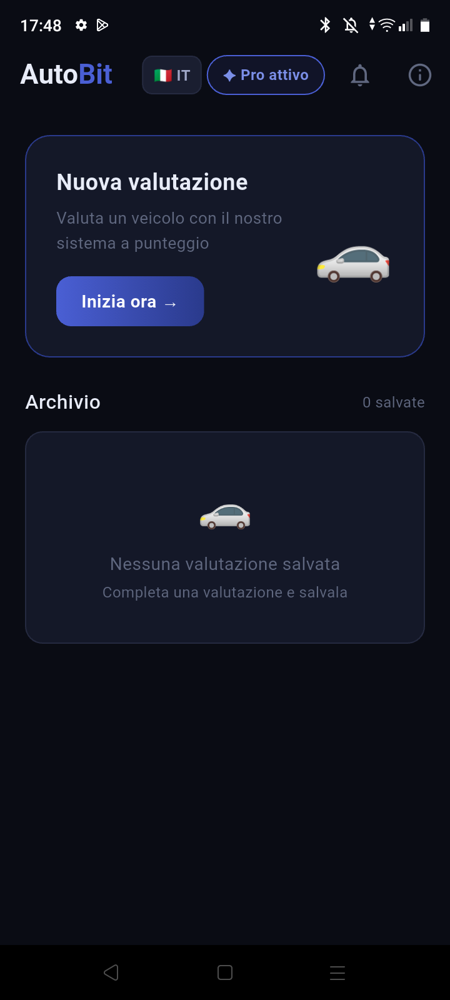
Home · vehicle assessment
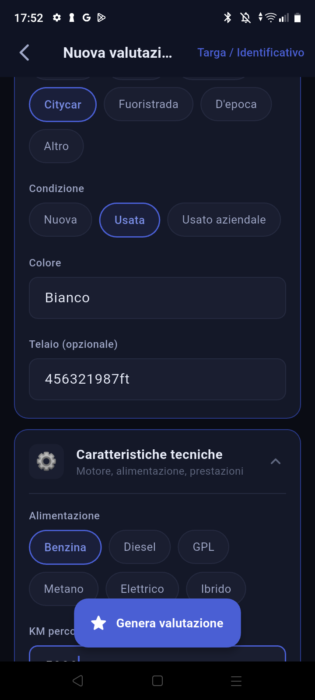
Checklist · inspection
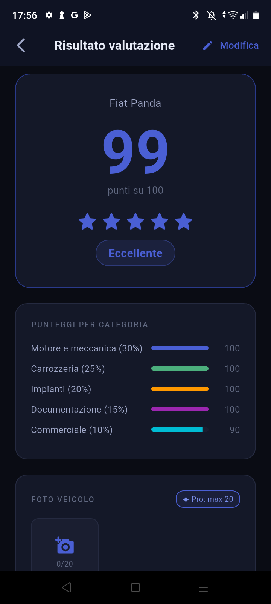
Scoring · technical review
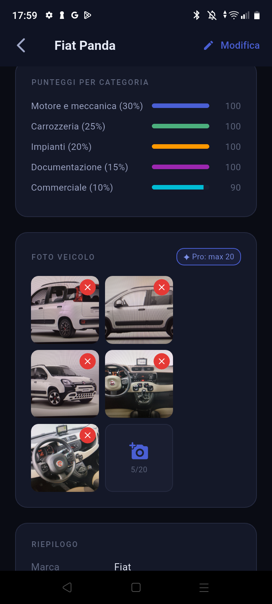
Report · assessment
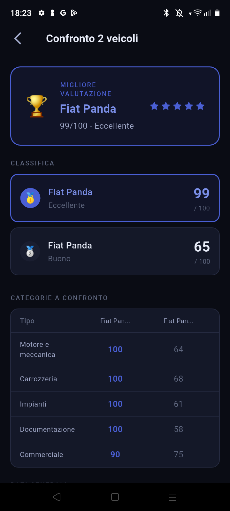
Comparison · multiple vehicles
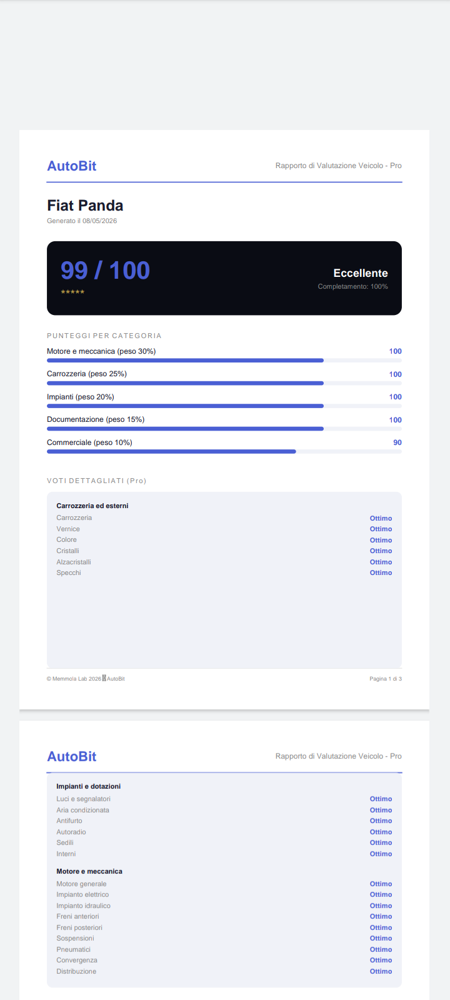
PDF · evidence
Shared universe
Separate at first, connected over time
ImmoBit and AutoBit need to grow as two independent series. The crossover only works once readers have learned to recognize both worlds.
The narrative collision
Elena and Luca are looking for the same thing in different markets: the truth behind appearances. When they meet, the crossover is not a gimmick but a natural consequence.
Phase 01
Separate identities
ImmoBit and AutoBit grow with their own pace, cases and audiences.
Phase 02
Invisible connections
Places, details, companies, neighborhoods and clues begin to recur.
Phase 03
First crossover
Elena and Luca meet when their everyday investigations lead to the same underlying problem.
Publishing
Only then comes the social media strategy
Social media was not the starting point: it came later. First the universe took shape, then the system for sharing it.
The master episode
Each episode begins as a complete work: readable on the website, adaptable to PDF, publishable as a carousel and then cut into micro-scenes.
Original notes · Master episode and micro-scenes
How to continue now
I recommend this pipeline:
1. Keep the “master” episode.
The one we have just created.
Format:
complete
cinematic
readable
perfect for:
Facebook
X
LinkedIn
PDF carousel
website
This becomes:
the “director's cut.”
2. Cut it into vertical micro-scenes.
Yes.
Absolutely yes.
That is the really strong move.
TikTok / Reels / Shorts
You do not publish the entire comic.
You publish:
micro-cliffhangers.
Vertical micro-scenes
The 12 panels become short vertical videos with a hook, suspense and payoff.
Original notes · Shorts/Reels structure
IDEAL SHORTS/REELS STRUCTURE
VIDEO 1
Hook:
“The perfect apartment”
Panels:
1–3
Ending:
“Too perfect…”
VIDEO 2
Panels:
4–6
Ending:
“Wait…”
VIDEO 3
Panels:
7–9
Ending:
“There was a hidden problem.”
VIDEO 4
Panels:
10–12
Final payoff:
“Houses can speak…”
Rhythm and channels
YouTube channels remain separate for ImmoBit and AutoBit. Other social platforms can serve as Memmola Labs hubs for behind-the-scenes posts, concept art, short scenes, UI details and worldbuilding.
Original notes · Suggested publishing rhythm
Suggested structure
YouTube → separate channels
1 ImmoBit channel
1 AutoBit channel
Publishing:
1 episode per week per channel
So:
Tuesday → ImmoBit
Friday → AutoBit
This is PERFECT because:
each channel stays consistent
the algorithm understands the subject
the audience knows what to expect
you never disappear for a whole week
you have a realistic amount of time to produce the work.
Original notes · LinkedIn and the creative process
LinkedIn is useful for:
telling the story of the process
the AI pipeline
tech storytelling
narrative UX
“how we built it”
What you are doing is:
narrative software branding.
And that is very unusual.
It was never just advertising.
ImmoBit and AutoBit Stories became a shared narrative universe built around decisions, trust and hidden details. The apps are real, the problems are real, and the stories show what happens when people learn to look more carefully.
Complete process archive
All the work, not just the finished result
This section gathers the complete journey behind ImmoBit and AutoBit Stories: decisions, doubts, practical steps, social strategy, visual language, narrative structure and the development of a shared universe.
Why keep the complete files?
The value of this page lies not only in showing a finished result but in making the process visible: how an initial idea grew into a narrative direction, an editorial strategy and a universe with characters, style, archives, dedicated pages and serialized content.
These complete materials can therefore live here as official attachments to the manifesto: not polished texts, but working documents.
Part 1 · The birth of the idea
The founding file: the first spark, the decision to create a comic, the European ligne claire style, the role of the apps and the initial definition of the universe.
The operational journey: channels, Shorts, Reels, YouTube, LinkedIn, behind-the-scenes work, concept art, PDF reports, carousels and the publishing cadence.
These documents should not be polished too much.
Their strength is showing how the thinking really evolved:
the initial questions, doubts, revisions, practical choices,
changes of direction and the way the project grew.
That is why the full archive remains an essential part of the manifesto.